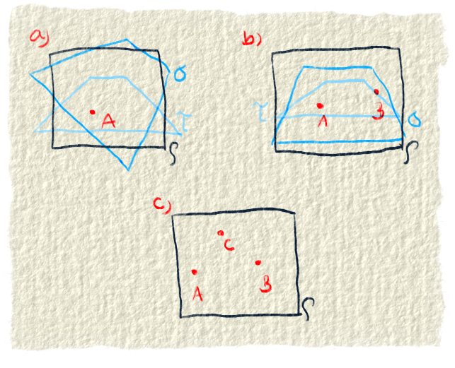
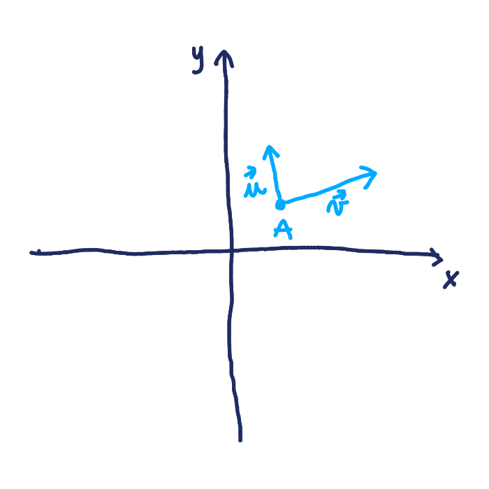
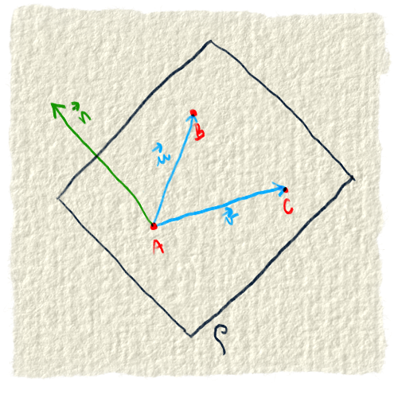
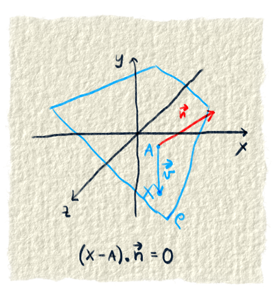
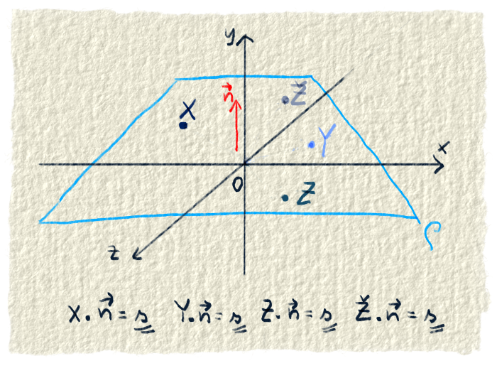
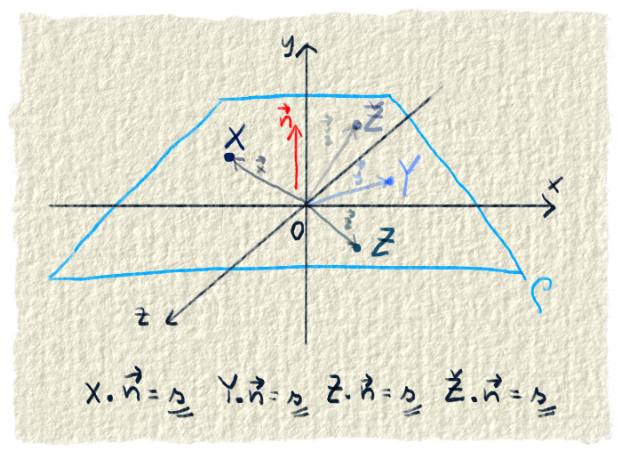
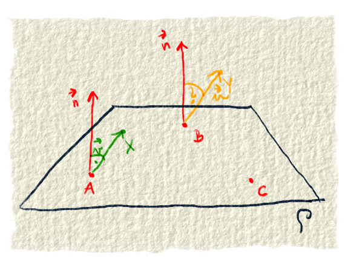

Rovina je daná tromi bodmi. Označíme si ich A, B a C. Môžeme ju definovať aj dvomi vektormi alebo vektorom a bodom. Vektorom dáme mená $\vec{u}$ a $\vec{v}$.
Ak by sme poznali iba dva body, alebo dokonca iba jeden, nevedeli by sme o ktorú rovinu sa jedná. Mali by sme na výber z viacero rovín, ktoré sú „otočené“ okolo tých dvoch bodov. Viď obrázok č. 1.
Dôležité upozornenie. Rovina je nekonečná. My ju budeme kresliť ako štvorec, pretože nekonečno sa nám nevojde do obrázku.

Obr. 1.: a) Ak by bola rovina daná iba jedným bodom, nevieme, o ktorú rovinu ide. Jeden bod môže patriť do nekonečne veľa rovín. b) Rovina daná dvomi bodmi Tu sme vylúčili roviny podobné rovine sigma z obrázku a, teda všetky roviny, do ktorých nepatrí bod B (je buď nad rovinou, pod ňou alebo vedľa nej). Stále však vieme tieto dva body priradiť nekonečne veľa rovinám. c) Rovina daná tromi bodmi. To je tá správna definícia, pretože tretí bod eliminuje roviny, ktoré sú nejak naklonené. Z obrázku b vypadávajú roviny sigma a tau.
Parametrická rovnica roviny
Rovinu vieme identifikovať pomocou troch bodov. Lenže rovina má viac ako tri body, oveľa viac. Rovina má nekonečno bodov. Niekedy nám nestačí poznať iba tieto tri body, ale radi by sme ich poznali viac, dokonca všetky. Treba ich teda nejako opísať.
Musíme vymyslieť spôsob, ako dočiahnuť na každý z nich. Všetko čo máme sú tri body, musíme si s nimi nejako vystačiť. Vieme si z nich spraviť dva vektory a aj si ich spravíme, pretože ich náhodou budeme potrebovať. Poznáme teda nejaký bod a dva vektory. Bod budeme volať A a vektory $\vec{u}$ a $\vec{v}$.
Na tomto mieste si musíš spomenúť na násobenie vektora číslom a na sčítavanie vektorov, lebo to bude ďalšia vec, ktorú budeme potrebovať. Keď násobíme vektor nejakým číslom, vieme ho ľubovoľne skracovať alebo predlžovať. Keď vektory sčítame, dostaneme vektor medzi nimi.
Poznáme teda bod, dva vektory a máme dva nástroje: násobenie a sčitovanie vektorov. Teraz to poskladáme dohromady. Vektory budeme násobiť nejakým číslom a tým budeme meniť ich veľkosť. Aj smer môžeme zmeniť na opačný, keď ich vynásobíme záporným číslom. Ich sčítaním dostaneme vektor medzi nimi. Ten môže dočiahnuť na akýkoľvek bod v rovine.
Už máme vektor, ktorým budeme ukazovať, ale nemáme miesto, z ktorého budeme ukazovať. To miesto nájdeme ľahko. Vyberieme si jeden z troch bodov, ktoré poznáme. My si vyberieme bod A.
Ukážeme si to na obrázku.

Obr. 2.: Na bodoch M, N, O, P chceme ukázať, ako sa pomocou jedného bodu a dvoch vektorov dá dočiahnuť na každý bod v rovine. Treba poznať jeden bod v rovine, od ktorého sa dá odraziť. V našom prípade je to bod A. Potom treba dva vektory. Sú to $\vec{u}$ a $\vec{v}$. Tieto dva vektory sa rôzne naškálujú a potom sa spočítajú. Rôznym škálovaním vektorov $\vec{u}$ a $\vec{v}$ sa dosiahne na každý bod v rovine.
Vráťme sa k našej úlohe. Pomocou troch bodov sme chceli dočiahnuť na každý bod v rovine. Vyrobili sme si si vektory u a v. Vieme ich ľubovoľne skracovať a naťahovať. Keď ich sčítame, dostaneme akýkoľvek vektor v rovine. Zapíšeme si to teraz matematicky:
$$ t \cdot \vec{v} + s \cdot \vec{u} $$
Písmená t a s reprezentujú čísla, ktorými sa násobia vektory. Ešte treba vektor aplikovať na nejaký bod, v našom prípade je to bod A. Takto dostaneme každý bod v rovine. Nebudeme robiť rovnice pre každý bod roviny, tak si ich všeobecne označíme písmenom X.
$$ X = A + t \cdot \vec{v} + s \cdot \vec{u} $$
Krátka rekapitulácia rovnice. Akýkoľvek bod roviny X, dostaneme tak, že k známemu bodu A pripočítame vektor, ktorý vznikne sčítaním vektorov v a u. Tieto dva vektory poznáme a ich veľkosť je zmenená vďaka parametrom t a s.
Normálový vektor roviny
Vo všeobecnej rovnici roviny budeme potrebovať normálový vektor, tak si ho tu spravíme. Odstopuj si 5 minút a skús porozmýšľať, ako by sa to dalo...Ok, môžeš čítať ďalej.
Poznáme tri body a vieme z nich spraviť dva vektory. Poznáme ich pod menami $\vec{u}$ a $\vec{v}$. Pri vektoroch sme si povedali, že keď sa vynásobia dva vektory pomocou vektorového súčinu, vznikne tretí vektor, ktorý je na ne kolmý. Keďže naše dva vektory patria rovine, tak vzniknutý vektor je kolmý aj na rovinu. Vektor kolmý na rovinu sa nazýva normálový vektor roviny a zvyčajne sa označuje $\vec{n}$.

Obr. 3.: Na rovine poznáme tri body A, B, C. Spravíme z nich vektory $\vec{u}$ a $\vec{v}$. Vektorovým súčinom dostaneme normálový vektor roviny $\vec{n}$.
Skalárny súčin normálového vektora a vektora, ktorý patrí rovine
Na pochopenie všeobecnej rovnice roviny treba ešte jednu vec. Je ňou poznatok, že skalárny súčin dvoch vektorov, ktoré sú na seba kolmé, je nula. Normálový vektor roviny je kolmý na všetky vektory, ktoré patria rovine. Teda ich skalárny súčin bude 0. Vektory patriace rovine sa dajú vypočítať z bodov.

Obr. 4.: Z akýchkoľvek dvoch bodov na rovine vieme spraviť vektor. Tento vektor bude patriť rovine. Normálový vektor naň bude kolmý. My sme si na ukážku vybrali body A a X. Skalárny súčin normálového vektora a vektora A-X bude 0.
Rovnica $(X-A) \cdot \vec{n} = 0$ sa dá roznásobiť a potom nám vzniknú dva skalárne súčiny. Jeden je skalárny súčin normálového vektora a bodu X, druhý je skalárny súčin normálového vektora a bodu A.
$$
\begin{align}
(X-A) \cdot \vec{n} = 0 \\
X \cdot \vec{n} - A \cdot \vec{n} = 0
\end{align}
$$
Z rovnice vidíme, že tieto dva skalárne súčiny sú rovnaké. Oba body patria rovine a teda môžeme povedať, že keď spravíme skalárny súčin akýchkoľvek bodov roviny s normálovým vektorom, tak výsledky musia byť rovnaké.

Obr. 5.: Skalárny súčin normálového vektora a akéhokoľvek bodu v rovine je rovnaký. Na obrázku sme násobili normálový vektor $\vec{n}$ s bodmi X,Y,Z,Ž. Výsledok skalárneho súčinu bol vždy rovnaký. Vyšiel s.
Poznámka pre pozorných čitateľov, ktorý si všimli, že hovoríme o skalárnom súčine vektora s bodom. Možno ti napadlo, že skalárny súčin sa robí medzi vektormi a tu máme zrazu vektor a bod. Z jedného uhla pohľadu máme vektor a bod, ale z druhého máme dva vektory. Keď sa na to pozrieš z druhého uhla, zistíš, že naše body sú vlastne koncové súradnice vektora začínajúceho v bode [0,0,0].

Obr. 6.: Na bod môžeme pozerať aj ako na vektor, ktorý začína v bode [0,0,0]
Všeobecná rovnica roviny
Konečne sme sa dostali k všeobecnej rovnici roviny. Je to ďalší spôsob ako opísať každý bod v rovine. Táto rovnica je celkom šikovným nástrojom, ak treba zistiť, či bod leží v rovine alebo nie.
Budeme potrebovať normálový vektor roviny, tak ho skúsime získať. Poznáme tri body v rovine. Spravíme si z nich dva vektory $\vec{u}$ a $\vec{v}$. Vektorovým súčinom týchto dvoch vektorov dostaneme normálový vektor roviny.
Ďalej budeme potrebovať vedomosť o skalárnom súčine normálového vektora a vektora patriaceho rovine.
Chceme si spraviť nástroj, vďaka ktorému budeme vedieť, či bod napr. X patrí rovine. Stačí nám zistiť, či skalárny súčin bodu X s normálovým vektorom je rovnaký ako skalárny súčin normálového vektora a bodu, o ktorom vieme, že je v rovine. Ak sú tieto dva skalárne súčiny rovnaké, bod patrí rovine, inak nepatrí.

Obr. 7.: Vo všeobecnej rovnici roviny ide o to, aby sme sa dozvedeli, či bod leží alebo neleží v rovine. V rovine poznáme bod A a normálový vektor. Na ukážku sme si vybrali dva body. Bod X patrí rovine, bod Y v nej neleží. Pre všetky tri body X,Y,A sme si spravili skalárny súčin s normálovým vektorom. Potom sme tieto skalárne súčiny porovnali. Skalárne súčiny pre bod X a A sú rovnaké, lebo oba body patria rovine. Skalárny súčin pre bod Y je iný.
Ešte to treba zapísať po matematicky, aby sme s tým vedeli pracovať. Poznáme teda normálový vektor roviny $\vec{n}=[a,b,c]$ a chceme zistiť, či akýkoľvek bod $X=[x,y,z]$ patrí rovine. Spravíme si teda ich skalárny súčin $a \cdot x + b \cdot y + c \cdot z $.
Povedali sme si, že tento skalárny súčin musíme porovnať so skalárnym súčinom normálového vektora a bodu, ktorý patrí rovine. My poznáme bod $A=[a1,a2,a3]$. Spravíme si teda tento skalárny súčin: $a \cdot a1 + b \cdot a2 + c \cdot a3 $.
Tento skalárny súčin bude treba vždy, keď budeme chcieť vedieť, či bod patrí rovine. Ak budeme chcieť overiť 1000 bodov, museli by sme ho vypočítať 1000 razy. Lenže on je stále taký istý a rátať ho znova a znova je zbytočné. Tak si ho vypočítame raz a zatiaľ ho skryjeme pod písmeno s.
Aby sme vedeli, či bod X patrí rovine, potrebujeme porovnať dva skalárne súčiny. Prvý je skalárny súčin bodu X a normálového vektora. Druhý je skalárny súčin známeho bodu A a normálového vektora. Už sme si vypočítali oba, tak to teraz dáme do rovnosti. $a \cdot x + b \cdot y + c \cdot z = s $.
Pre lepší pocit dáme s na druhú stranu $a \cdot x + b \cdot y + c \cdot z - s = 0$. To mínusko je tam také škaredé, tak sa ho zbavíme. Povieme, že d = -s. Takýmto trikom dostaneme peknú rovnicu:
$$a \cdot x + b \cdot y + c \cdot z + d = 0$$
Dostali sme všeobecnú rovnicu roviny. Ešte si ju trochu zopakujeme. Skalárny súčin normálového vektora a každého bodu na rovine je rovnaký. Spravíme si teda skalárny súčin nejakého bodu z roviny. V rovnici je jeho opačná hodnota -s označená písmenom d. Keď budeme chcieť vedieť, či nejaký bod patrí do roviny, iba ho dáme do skalárneho súčinu s normálovým vektorom. Ak bude výsledok rovnaký, bod patrí do roviny.